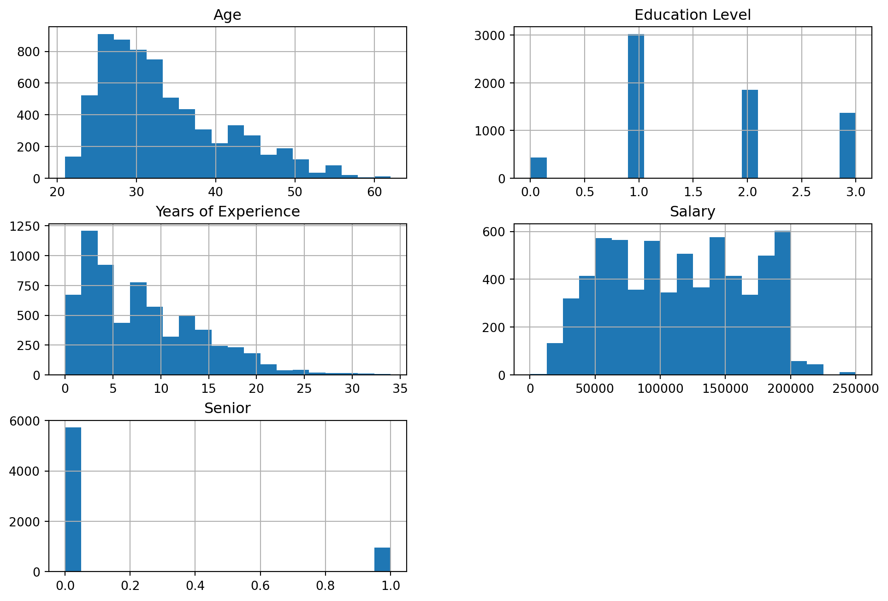
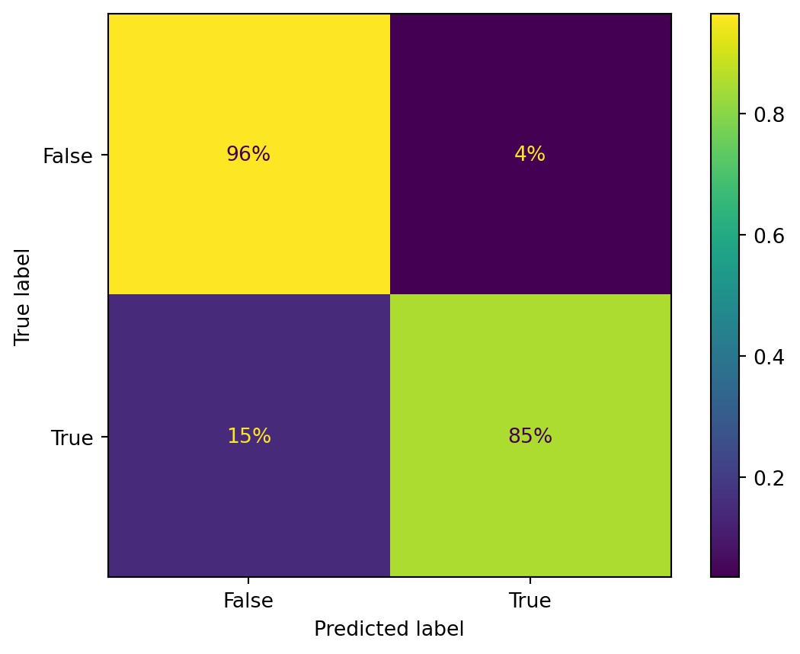

Classification is a supervised machine learning technique. Supervised training sets have desired solutions called labels. For the example below we are going to use classification to try and predict whether or not the an individual is in a senior leadership role.
Let’s visualize the numeric variables with histograms to check the shape of the data.
import matplotlib.pyplot as pltsalary.hist(bins =20, figsize=(12, 8))plt.show()

Gender is a categorical attribute that is part of the model. Let’s convert the categorical variable to a dummy variable that we can use in our classification model.
The target attribute that we want to classify is ‘Senior’. The ‘Senior’ attribute is currently an integer we are going to change it to a boolean for the purpose of this model. So ‘1’ indicates that an individual has a senior position and ‘0’ means that an individual does not has a senior position.
C:\Users\janel\AppData\Local\Temp\ipykernel_14000\2222679277.py:1: FutureWarning:
The default value of numeric_only in DataFrame.corr is deprecated. In a future version, it will default to False. Select only valid columns or specify the value of numeric_only to silence this warning.
Senior 1.000000
senior_bool 1.000000
Age 0.334070
Years of Experience 0.317877
Education Level 0.273466
Salary 0.223636
Gender_Male 0.038852
Gender_Female -0.038852
Name: senior_bool, dtype: float64
There does not seem to be a very high correlation with the senior_bool attribute but we’ll see how good of a classification model we can build.
Create Train Test Split Datasets
from sklearn.model_selection import train_test_splittrain_set, test_set = train_test_split(salary, test_size=0.2, random_state =35)
In 4 out of 5 of the folds the model scores over 85% but the 14% fold is pretty bad. Let’s compare it to the dummy classifier, which always selects the most frequent classifier which is not a senior.
It looks like the dummy classifier performs better than the SGD classifier. Let see if we can improve upon the performance with the Random Forest Classifier.
The random forest classifier performs better than both the SGD and Dummy classifiers. CPrrectly predicting whether or not a person has a senior role of not over 94% of the time.
Some of our attributes distributions were a bit skewed, let’s see if applying the Standard scaler improves the performance of the model.
Applying Standard Scaler to the Training Attributes
The confusion matrix shows us that 97% of the time there is a true Negative i.e a person who is identified as not being in a senior role is acurately categorized as false 97% of the time. On the other side of chart, 84% of the time there is a True Positive i.e. a person who is identifies as having a senior role is correct 84% of the time.
Evaluate Test Set
forest_clf.fit(X_train, y_train) # fit the Random Forest model y_test_predict = forest_clf.predict(X_test)ConfusionMatrixDisplay.from_predictions(y_test, y_test_predict, normalize ="true", values_format ='.0%')plt.show()

For evaluating the test set, 96% of the time there is a true Negative i.e a person who is identified as not being in a senior role is acurately categorized as false 96% of the time. On the other side of chart, 85% of the time there is a True Positive i.e. a person who is identifies as having a senior role is correct 85% of the time. Which aligns closely with what we saw in the training dataset.